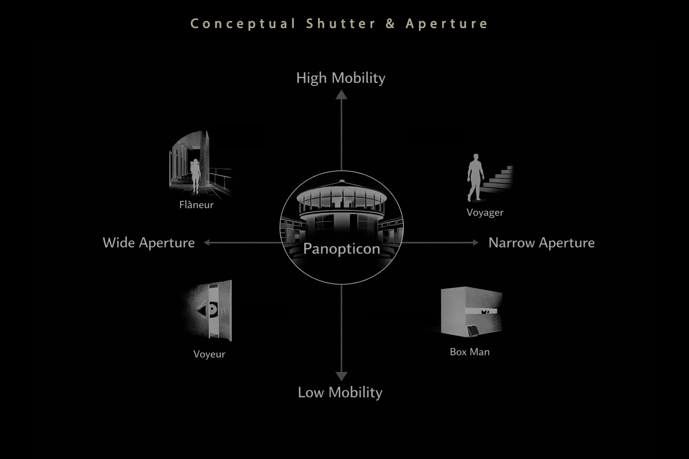

Thesis / Architectural Research
Campus Obscura
Perception, Apparatus, and Reconstructed Space
Research
Physical Making
Simulation
Photography
Perceptual Systems
Intro
Campus Obscura is an architectural research project examining how perception is not a passive reception of space but an active construction shaped by apparatus, body, and environment. The work spans physical making, computational simulation, photographic research, and phenomenological framing.
Conceptual Frameworks


Perception
Signal intake
Perception begins as a partial encounter. Vision is filtered through body, instrument, and viewpoint before it becomes a stable image.
Framing
Selective construction
Framing does not just crop space. It organizes depth, relation, and emphasis, producing a coherent field from competing conditions.
Motion
Image over time
Motion introduces sequence, delay, and drift. Spatial understanding emerges across time, not from a single frozen view.
Act I
Perception as Signal
Perception as constructed signal
The apparatus does not simply record space. It reconstructs it. Act I establishes the thesis framework by examining light, aperture, and optical mediation as the basis of image formation.
These studies move from analog capture toward an architectural understanding of how perception is filtered, shaped, and made legible.

Cigar Pinhole
Hand built pinhole camera & tripod, wood and cigar box
Act II
Spatial Mechanics
Order as behavior
Within every coherent image there are multiple spatial narratives competing for primacy.
Explorations of computational systems and emergent spatial behavior treat swarm dynamics, particle systems, and procedural rules as models of spatial intelligence.
Act III
Architecture becomes an instrument that frames, compresses, and constructs perception. Operable apertures and inhabitable observatories turn visibility, depth, and procession into designed events.

Accordion Aperture System
Kinetic Framing through Expansion and Compression
A kinetic aperture system that controls view and depth through expansion, compression, and layered framing.

Vessel Sacellum
Astral Observatory
A place of introspection where light operates as threshold and orientation. Procession through an inhabitable wall turns fragmented memory into place.
Act IV

Perception as System
Architecture as optical instrument
There is no neutral vision. Every experience of space is mediated by the body, the frame, the aperture, and the instrument.
Act IV consolidates the thesis into architectural systems that stage light, occlusion, and motion. Space is not observed. It is produced.
A camera obscura was constructed directly against the gallery wall to physically test aperture behavior, turning exhibition space into a full-scale instrument for framing, compression, and light control.

Interior
Inside the camera

Exterior
Camera in space

Projection System
Light shaping visibility

Spatial Interference
Depth through overlap

Focal Lengths as Space
Compressed and expanded views
Publications
Campus Obscura: Cinematic Perception and the Fragmentation of Architectural Space
A research paper extending the thesis into architectural theory, examining cinematic perception, montage, and the construction of spatial experience through optical apparatus.
Read the paper
University of Florida, Graduate School of Architecture. The paper acts as the longer-form theoretical companion to the design and image-based thesis work shown above.